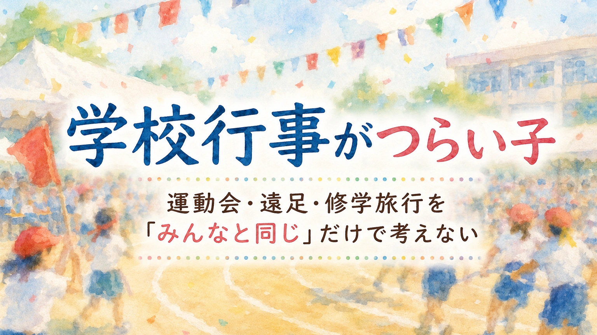

📖 知っておくと読みやすくなる言葉
- 合理的配慮（ごうりてきはいりょ）
- → 障害のある子が活動に参加できるよう、学校が負担の重すぎない範囲で行う調整
- 建設的対話（けんせつてきたいわ）
- → 必要な支援・学校側の事情・代わりの方法を、本人や保護者と学校が一緒に話し合うこと
- 部分参加（ぶぶんさんか）
- → 全部ではなく、一部の場面・役割・時間だけ参加する形
- 特別支援教育コーディネーター
- → 校内で支援の調整役を担う先生。相談の窓口になってくれる
運動会が近づくと、朝から落ち着かなくなる。遠足の前日に眠れなくなる。修学旅行の話が出ると固まってしまう。発表会の練習で疲れ切ってしまう。避難訓練の音や移動で泣き出す。行事のあと、家で大きく荒れる――。お子さんに、そんな様子はありませんか。
学校行事は、子どもにとって大切な経験になることがあります。友達と同じ時間を過ごし、ふだんとは違う活動に挑戦し、家庭ではできない体験をする。そうした意味があるからこそ、保護者は迷います。「思い出をつくってほしい」「でも本人はとてもつらそう」「休ませるべきか、頑張らせるべきか」。この迷いは、とても自然なものです。
ただ、学校行事を「みんなと同じように参加するか、休むか」の二択だけで考えると、子どもの本当の困り感が見えにくくなることがあります。大切なのは、その子が参加しやすい条件を探すことです。「全部同じ形で参加する」と「まったく参加しない」の間には、いくつもの選択肢があります。
この記事は、診断や治療の判断をするものではありません。家庭や学校で見えている姿を、支援や相談につなげるための材料として整理することを目的にしています。
学校行事がつらい子は、ただ「行きたくない」と言っているのではないことがあります。音、人混み、見通しのなさ、失敗への不安、移動、食事、宿泊、集団の中での緊張など、複数の負荷が重なっている場合があります。大切なのは、子どもを「逃げている」と責めることでも、すべてを避けることでもなく、その子がどの形なら参加しやすいのかを家庭と学校で一緒に探すことです。
時間がない方は、ここから読めます
学校行事は、ふだんの学校生活より負荷が大きい
学校行事は、普段の授業とは違います。時間割が変わり、場所が変わり、人の動きが増え、音が大きくなる。予定が読みにくくなり、失敗が目立ちやすくなり、先生も周囲も忙しくなる。子どもによっては、これだけで大きな負荷になります。
ふだんは何とか学校生活を送れている子でも、行事になると急に崩れることがあります。「いつもできているのに」「行事くらい頑張れるはず」と見えるかもしれません。でも行事には、普段より多くの刺激と変化が重なります。音や肌ざわりなど、感覚のつらさが背景にあることもあります。
行事でつらくなる子を考えるときは、「参加する気があるか」だけでなく、「何が本人にとって負荷になっているか」を見ることが大切です。
学校行事でつらくなりやすい理由
つらくなる理由は一つではありません。いくつかの負荷が重なって、本人の中で限界を超えていることがあります。
1. 見通しが持ちにくい
行事では、普段と違う流れになります。何時に何をするのか、どこへ行くのか、誰と動くのか、どれくらい待つのか、失敗したらどうなるのか、途中で休めるのか。こうした見通しが持てないと、不安が強くなる子がいます。大人は「当日になれば分かる」と思いがちですが、見通しがない状態そのものが強い負荷になる子もいます。
2. 音や人混みがつらい
運動会の音楽やピストル、体育館の反響、応援の声、バスの中のざわざわ、集合場所の人混み、宿泊先の知らない音。これらが重なると、耳をふさぐ・泣く・怒る・固まる・逃げたくなるといった姿につながることがあります。本人にとっては「少しうるさい」ではなく、逃げ場のない刺激として感じられている場合があります。
3. 失敗が目立つ不安がある
運動会や発表会では、走る・踊る・歌う・セリフを言う・合図に合わせるなど、人前で動く場面があります。このとき「失敗したらどうしよう」という不安が強くなる子がいます。失敗そのものより、みんなに見られること、笑われるかもしれないこと、間違えたときにどうすればよいか分からないことが負荷になります。
4. 移動や待ち時間が長い
遠足や修学旅行では、バスや電車での移動、集合しての待ち時間、トイレのタイミングの読みにくさ、いつもと違う食事の時間、荷物を持っての移動が増えます。特に体力面・不安面・感覚面・排泄面に心配がある子にとっては、移動そのものが大きな課題になります。
5. 食事や宿泊の不安がある
宿泊学習や修学旅行では、食べられるものがあるか、においや食感が大丈夫か、友達と同じ部屋で眠れるか、入浴や着替えが不安ではないか、トイレに行きたいときに言えるか、夜に不安になったとき誰に伝えればよいか――こうしたことが大きな不安になります。「楽しい旅行」と言われても、本人の中では不安の方が大きい場合があります。
6. 行事のあとに家で崩れる
行事中は何とか頑張っているように見え、学校では「参加できました」と言われる。でも家に帰ると、泣く・怒る・動けなくなる・宿題に向かえない・翌日に登校しぶりが出る・数日間疲れを引きずる。この場合、行事そのものは終わっていても、本人の中ではかなりのエネルギーを使い切っている可能性があります。家で大きく崩れる背景については、「学校では大丈夫」なのに家で荒れる子の記事でも整理しています。
「参加か不参加か」だけで決めない
本人の状態によっては、休むことが必要な場合もあります。体調や不安が強いときに、無理に参加させることがよいとは限りません。ただ、その前に考えたいのは、参加の「形」を分けることです。
| 参加の形 | 具体例 |
|---|---|
| 全部参加する | みんなと同じ内容で参加する |
| 一部だけ参加する | 得意な種目・好きな場面だけに出る |
| 見学で参加する | その場にいて、無理のない範囲で関わる |
| 役割を変えて参加する | 競争ではなく係・応援・記録などで関わる |
| 短時間だけ参加する | 負荷の高い時間帯を外して参加する |
| 休憩場所を決めて参加する | つらくなったら戻れる場所を用意しておく |
| 事前練習だけ参加する | 本番前の慣らしで関わる |
「みんなと同じ形」だけを参加と考えると、子どもに合う方法が見えにくくなります。その子にとって意味のある参加は、必ずしも全員と同じ形とは限りません。
行事の前に学校と相談したいこと
行事が始まってから対応するより、事前に確認しておく方が、本人も学校も動きやすくなります。
見通しの共有
- 当日の流れ・場所・活動を事前に知る
- 待ち時間や移動時間を確認する
- 休憩できる場所を確認する
- 困ったときに誰に言えばよいかを決める
- 写真・地図・しおりなどで見通しを持てるようにする
感覚面の配慮
- 音が大きい場面を事前に知らせる
- イヤーマフや耳栓を使えるか相談する
- 体育館や集会では出入口に近い場所にする
- 人混みの少ない場所で待てるようにする
- 服装・持ち物・苦手なにおいや食事への対応を相談する
役割や参加方法の調整
- 全種目ではなく一部だけ参加する
- 競争ではなく係や応援で参加する
- 発表のセリフ量を調整する／立ち位置を端にする
- 見学から始める
- 当日の状態に応じて参加量を調整する
行事後の疲れへの配慮
- 行事後の宿題量を相談する
- 翌日の負荷を軽くできるか確認する
- 帰宅後に休む時間を確保する
- 行事後の不安定さを学校に共有する
行事は当日だけで終わるとは限りません。前後の生活も含めて支援を考えることが大切です。参加方法を調整することは、逃げではありません。本人が行事に関われる形を探すことです。
合理的配慮として相談できることがある
学校行事への参加が難しい場合、合理的配慮として相談できることがあります。合理的配慮は特別扱いではなく、学びや活動に参加するうえで障壁になっているものを減らすための調整です。学校行事であれば、部分参加、休憩場所の確保、イヤーマフや耳栓の使用、座席や待機場所の調整、行程表や写真での事前説明、食事や持ち物の調整、付き添い体制の確認、体調不良時や不安が強いときの退避方法などが考えられます。
ただし、合理的配慮は「希望した内容が必ずそのまま認められる」制度ではありません。本人・保護者と学校が、必要な支援・学校側の事情・代わりの方法を話し合う建設的対話が前提になります。「負担が過重」と判断される場合でも、何もしないのではなく、別の方法を一緒に検討することが求められます。申請の手順や伝え方は、合理的配慮ってどう頼む？の記事で整理しています。
大切なのは「参加できません」で終わらせることではなく、どこが難しいのか／どの条件なら参加しやすいのか／どの場面に配慮があれば本人の参加につながるのかを、学校と一緒に考えることです。
学校に伝えるときのポイント
「行事が苦手です」だけでは、学校に伝わりにくいことがあります。できるだけ、場面と反応を分けて伝えると、支援につながりやすくなります。
「運動会が嫌です」だけではなく →
「ピストルや応援の音が強く、練習後に帰宅してから泣いて動けなくなります」
「遠足が不安です」だけではなく →
「バスの中のざわざわと、トイレのタイミングが分からないことを強く不安がっています」
「修学旅行に行けるか心配です」だけではなく →
「食事・入浴・就寝時に不安が強く、どの場面で誰に相談すればよいかを事前に確認したいです」
「発表会が苦手です」だけではなく →
「人前で間違えることへの不安が強いため、セリフ量や立ち位置を相談したいです」
行事名だけでなく、刺激・場面・本人の反応・相談したいことを分けると、学校側も具体的に考えやすくなります。下のメモは、相談の前に書き出しておくときの型としてお使いください。
相談するときのメモ例
① 行事で心配な場面
- 運動会の音や人混み／遠足のバス移動
- 修学旅行の食事や宿泊
- 発表会で人前に立つこと
- 避難訓練の音や移動／長い待ち時間／予定変更
② 家庭で見えている様子
- 行事の話が出ると不安が強くなる
- 練習のあと、帰宅して大きく荒れる
- 音や人混みのあと、耳をふさいで横になる
- 前日に眠れなくなる／行事後、数日間疲れを引きずる
- 「失敗したらどうしよう」と繰り返し言う
③ 学校に相談したいこと
- 行事の流れを事前に確認できるか
- 休憩できる場所を決められるか
- 部分参加や見学参加ができるか
- 音や人混みへの配慮ができるか
- 本人が困ったとき、誰へ伝えればよいか
- 行事後の宿題や翌日の負荷を調整できるか
家庭でできること
家庭でできることもあります。ただし、保護者がすべてを背負う必要はありません。家庭で大切なのは、子どもの不安や負荷を観察し、学校に伝えられる形に整理することです。
行事の何がつらいのか聞く
「なんで行きたくないの」ではなく、選択肢を出して聞くと答えやすいことがあります。「音がつらい？」「人が多いのが嫌？」「何をするか分からないのが不安？」「失敗が怖い？」「トイレや食事が心配？」「途中で休めるか分からないのが不安？」。子どもが言葉にできない場合は、保護者が仮説を立てて一緒に探していくことが大切です。
事前に分かる情報を増やす
しおりを見る、写真で場所を確認する、当日の流れを書き出す、バスの座席やグループを確認する、休憩できる場所を確認する、困ったときに誰へ言うか決める。「分かっていること」が増えると、不安が少し下がる子がいます。
行事後の休息も予定に入れる
行事は終わったあとに疲れが出ることがあります。帰宅後は予定を詰めない、宿題を無理に進めない、静かに休む時間をつくる、翌日の朝の様子を見る。行事への支援は、当日だけでなく前後の生活を含めて考えることが大切です。
相談してよい目安
「行事くらいで相談していいのだろうか」と迷う保護者は少なくありません。でも、次のような状態が続く場合は、学校や専門機関に相談してよいと思います。
- 行事の話題が出るたびに強い不安が出る
- 練習のあと、帰宅後に大きく崩れる
- 運動会や発表会の前に眠れなくなる
- 遠足や修学旅行を強く拒否する
- 音・人混み・食事・宿泊などで身体症状が出る
- 行事後に数日間疲れを引きずる
- 登校しぶりにつながっている
- 家庭全体が疲れている
- 本人が「もう無理」など強い言葉を繰り返す
特に、身体症状が続く場合や、登校しぶり・自傷・強い不安が見られる場合、また本人が「消えたい」といった言葉を口にする場合は、家庭内の工夫だけで様子を見る段階を超えていることがあります。学校、スクールカウンセラー、特別支援教育コーディネーター、医療機関、相談支援事業所、自治体の相談窓口など、必要に応じてつながってください。
最後に――思い出づくりより先に、安心して参加できる条件を
学校行事は、子どもにとって大切な経験になることがあります。だからこそ大人は「参加させてあげたい」と思います。その気持ちは自然です。
でも、行事は「思い出づくり」だけではありません。子どもによっては、大きな音・人混み・見通しのなさ・失敗への不安・移動や宿泊の負荷が重なり、とてもつらい時間になることがあります。大切なのは、行事を避けることでも、無理に同じ形で参加させることでもなく、その子がどの形なら安心して関われるのかを考えることです。
全部参加。一部参加。見学。役割を変える。休憩を入れる。事前に流れを確認する。当日の状態で調整する。参加には、いくつもの形があります。「みんなと同じ」だけで考えなくてよいのです。その子にとって意味のある参加を、家庭と学校で一緒に探してよいのです。
通級・特別支援学級・放課後等デイサービス・相談窓口などの利用可能性や内容は、お住まいの市区町村によって異なります。まずは地域の窓口（障害福祉課・特別支援教育担当）に確認することをおすすめします。
まなびの森教育研究所では、家庭でできる発達支援の実践ツールを提供しています。
学校への伝え方の整理や、お子さんの「得意・苦手」の見える化に役立つワークシートが入っています。
相談前のメモづくりを一緒に整理したい方は 保護者向け相談ページ もご覧ください。